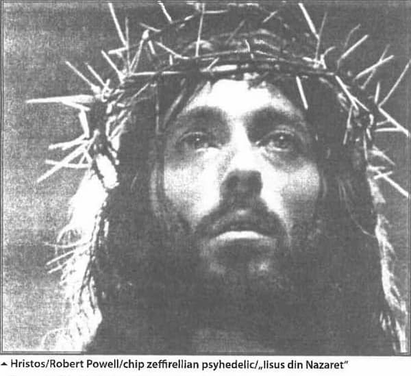
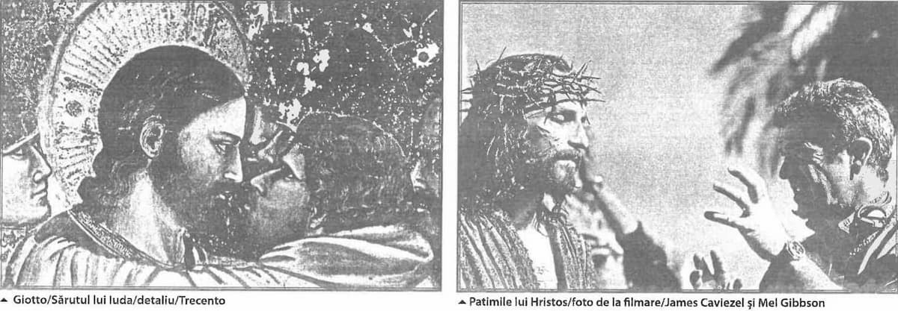

Titlul acestui scurt studiu polemic al unei acțiuni plastice realizată în 1994, în cadrul binecunoscutei manifestări „toamna budapestană”, la invitația criticului maghiar Laszlo Beke – una dintre cele mai prestigioase personalități ale avangardei contemporane europene. Locul ales de Beke pentru a găzdui desfășurarea manifestării românești a fost osuarul dezafectat din subsolul Catedralei-muzeu Kiscell, situată pe versantul Buda al Budapestei.
Inițiativa unei „pledoarii anti-zeffirelli” a aparținut „Anastasiei” și a fost susținută de o echipă de artiști formată din Mihai Sârbulescu, Ioana Bătrânu, Ion Grigorescu, Horia Paștina, Bogdan Vlăduță și subsemnatul iar alcătuirea documentarului video și foto al prestației noastre a fost realizat de Marius Caraman.
În esență, acțiunea noastră și-a propus să respingă public rețeta caducă teologic și iconografic a unui film de largă și masivă audiență – „Iisus din Nazaret”, în regia lui Franco Zeffirelli. Pentru a deconspira incompatibilitatea de fond morfologică și, mai ales, duhovnicească dintre Hristosul/Robert Powell, din filmul regizorului italian și chipul Domnului păstrat și livrat nouă de marea Tradiție a Bisericii Nedespărțite, am apelat la procedeul demonstrației inductive: pe întinsul unei săptămâni întregi șase artiști români au reprodus pe zidurile osuarului, în tehnica frescei, modele bizantine prestigioase ale icoanei Domnului, în timp ce pe toată întinderea spațiului hipogeu pâlpâia, în locuri anume alese, pe 20 de monitoare deodată, puse la dispoziție de primăria Budapestei, imaginea, tot timpul aceeași, fixă, aproape hipnotică, a Hristosului/Powell zeffirellian. Vizitatorul era somat să compare extrem de concret cele două fizionomii. Concluzia subînțeleasă trebuia să amendeze grava alunecare fizionomică produsă de fervoarea „evlaviei practice”, delirant efuzivă și agnostică, laolaltă cu descrierea importantelor prejudicii pe care le aduce doctrinei creștine pietismul iconografic al filmului.
Acțiunea noastră plastică, oarecum insolită în contextul catolic al ambianței maghiare, a fost vizitată intens de destulă lume dornică să contemple în osuarul catedralei-muzeu juxtapunerea imaginii de pe monitoare cu frescele care „se făceau” dinaintea ei. Cea mai deplină satisfacție ne-au oferit-o copiii de la o școală. Diriginta claselor respective, venite să ne viziteze, ne-a transmis în franceză nedumerirea școlarilor privind lipsa de asemănare dintre Hristosul massificat, al rețetei pietiste și ipostazele christice tradiționale. Micuții școlari încasaseră cel mai acut inadvertența iconică si, implicit, periculoasa derogare/decuplare de Tradiția Bisericii, săvârșită de „hiperevlavia” de VIP biblic a căutăturii Hristosului/Robert Powell!
Este exact diferența dintre Hristosul închipuit, imaginat de pictorii tabloului religios occidental și Hristosul care își dă chip, din tradiția iconarilor creștini. Hristosul închipuit este un chip dedus din calitățile excelentissime psihice și morale pe care I le atribuie imaginația religioasă. Este un mod de a imagina zeul în perfectă continuitate cu modalitățile civilizațiilor antice, precreștine, de a închipui fața și corpul zeităților. Fizionomia zeului precreștin descrie întotdeauna și indiferent de civilizația care îl „confecționează” modul cum dorește omul să arate Dumnezeul lui. În contrast, adevăratul iconar descoperă, dimpotrivă, cum vrea și dorește Domnul să se întrupeze iconic, adică imaginea prin care a binevoit să-și dea chip Dumnezeu în icoană, folosind credința și îndemânarea iconarului. Iconarul, nu îl închipuie pe Hristos ci reproduce modul în care Ziditorul făpturii binevoiește să se arate făpturii zidite. În consecință, realismul icoanei este integral și esențialmente revelant: el descoperă, de fiecare dată, cum arată fizionomia Celui care a binevoit să se întoarcă cu fața, după ce milenii de-a rândul s-a lăsat perceput doar din spate.
„Eșecul Mâșkin” / Oricărui credincios adevărat îi displace să fie numit „credincios practicant”, renume-poreclă pe care lumea o atribuie acelora dintre noi care de bine de rău se străduiesc să țină posturile de peste an, care se duc mai des la biserică și care, laolaltă cu alți credincioși, își asumă destinul unei comunități parohiale. Titulatura de credincios-practicant lasă să se înțeleagă că în afara lui ar mai exista și o altă tagmă de credincioși creștini, mai „modernă”, mai isteață, mai puțin exaltată și cu o prestație religioasă moderată, mai puțin demonstrativă. Caracteristic acestei categorii de credincioși este faptul că frecventează cu mai puțină asiduitate bigotă pravila creștină considerând că împlinirea rânduielilor bisericii n-ar reprezenta totuși criteriul absolut al dreptei credințe autentice; este mentalitatea, destul de răspândită, a creștinilor doar tangenți bisericii, care locuiesc marile orașe, a creștinilor îmbisericiți doar pe jumătate! Să luăm ca model stadionul. Lumea creștină poate fi împărțită în trei societăți distincte ușor de identificat: publicul creștin, suporterii creștini și credincioșii practicanți. Ar fi o eroare să se considere că ceea ce deosebește între ele categoriile de credincioși enumerate ar fi fervoarea religioasă, intensitatea ei mai mare sau mai mică, mai vădită sau mai puțin vădită; în definitiv se poate la fel de bine vorbi de intensul fanatism al suporterului creștin, mulțumit să admire doar spectacolul credinței altora, fără să admită însă ca cineva să-i pretindă să-și depășească condiția, cum la fel de bine se poate vorbi și despre pietismul agresiv al publicului creștin care, în numele „trăirii religioase autentice”, nesofisticată, respinge orice apel la cunoașterea și aprofundarea doctrinei teologice. Dacă există ceva care le deosebește, în mod real este felul implicării: credincioșii-practicanți sunt, desigur, singurii care se află efectiv „în teren”, „angajați în joc”, pe când ceilalți se mulțumesc să ocupe prudent „peluza” credinței. În schimb, ceea ce au în comun cele trei categorii este voința, expres clamată, de a rămâne cu orice preț etanșe, de a evita orice neglijență verbală, în urma căreia s-ar pune în seama vreunuia dintre ele ceva din demersurile și comportamentele celorlalte; fiecare ține morțiș să-și păstreze identitatea neamestecată cu devierile sau excesele celorlalte. Privită de la distanță, această clasificare descrie de fapt imaginea, deopotrivă reală și absurdă, a unei majorități credincioase care contemplă și păzește! credința în exercițiu a unei minorități practicante! Căreia dintre cele trei categorii i se adresează de fapt filmul „Iisus din Nazareth” a lui Franco Zeffirelli: publicului creștin, „țuțărilor” creștini, sau credincioșilor sau, pur și simplu, tuturor la un loc? Răspunsul la această întrebare este important numai în măsura în care ne preocupă consecințele uriașei notorietăți de care s-a bucurat filmul lui Zeffirelli.

Pare lipsită de sens culpabilizarea unui biet film religios, mai ales acum când sunt de atâtea de îndreptat în sfera vieții bisericești, infestată de atâtea lucruri nocive și păgubitoare. Oare merită să fie pusă în criză credința simplă onestă și curată a oamenilor - atâta câtă mai există-credință care totuși înconjoară cu destul elan sfânt tot ce exclamă măreția petrecerii Domnului printre noi! Problema o constituie tocmai semnificația acestui tot, tot care înghesuie în înțelesul său generic destule bizarerii ale credinței, care slăvesc fie cum nu se cuvine, fie indecent, fie incult, tocmai această „petrecere a Domnului printre noi”. În acest sens, alături de alte abuzuri și derapaje pe care le poate semnala teologia ortodoxă confruntată cu edulcorata dogmatică moralizatoare a „rețetei Zeffirelli”, există un reproș capital care privește, mai larg, însăși esența actului iconic, a facerii unei icoane. Această obiecție de fond poate fi rezumată printr-o șarjă de întrebări pe care s-ar fi cuvenit să și le pună fiecare credincios creștin și înaintea acestora, însuși credinciosul Zeffirelli. Poate fi întruchipată divino-umanitatea lui Hristos prin mijloacele filmului? Poate fi „jucat” Hristos? Dispune histrionul care se încumetă la o asemenea ispravă artistică de puterea iconică necesară întruchipării Persoanei dumnezeiești, fără să aducă prejudicii naturii teandrice a lui Hristos? Poate un actor să întrupeze „artistic” o icoană? Cel care poartă numele lui Iisus în filmul lui Zeffirelli este Cel descris de Scripturi, sau stereotipul fad, media fizionomică, stabilită arbitrar și convențional de închipuirea colectivă? Ne putem ruga persoanei întruchipate de Robert Powell? Există sau nu riscul ca Hristosul lui Zeffirelli să rateze reprezentarea divinității Logosului întrupat în istorie? În fine, poți „juca/interpreta” sfințenia dumnezeirii fără să fi sfânt? La capătul unei dureroase volute creatoare Dostoievski ne propune testamentar „soluția Karamazov”.
Într-un eseu mai puțin cunoscut, „Gogol și Dostoievski, Paul Evdokimov formulează teza potrivit căreia eșecul redactării literare a lui Mâșkin, harismaticul prinț în jurul căruia pivotează romanul „Idiotul” (eșec constat și declarat de însuși Dostoievski) reprezintă o benefică răscruce în creația dostoievskiană; în compensație, eșecul va deschide imediat seria marilor romane ale scriitorului rus. Dostoievski se plânge în notele sale de faptul că Mâșkin, sortit a fi inițial un simbol și o figurare actualizată a prezenței christice în lume, n-a reușit finalmente să depășească statutul unei neputincioase fantonșe literare, neplauzibilă teologic și artificială semantic. Iată de ce, ne lămurește Evdokimov, autorul a hotărât în ultima clipă să-i schimbe radical destinul, renunțând la coerența inițială a desfășurării acțiunii și, în final, „obligându-l” pe prinț să se sinucidă. Evdokimov observă un fapt care a scăpat celor mai faimoși critici literari ai operei dostoievskiene: „eșecul Mâșkin”, oricât de penibil, a însemnat lecția usturătoare care l-a determinat pe Dostoievski să inaugureze în tehnica romanului iconicitatea. De acum înainte dumnezeirea nu va mai fi simbolizată decât indirect, simbolic, întocmai simbolizării din icoane: prin strălucirea misterioasă a aurului din fundal. La rândul lor, persoanele îndumnezeite vor fi și ele retrase din primul plan al acțiunii romanului; ele vor ocupa constant numai arrière-planul desfășurării acțiunii, constituind totdeauna fundalul mirabil al romanului. „Frații Karamazov”, observă Evdokimov, este modelul acestui procedeu literar, pe cât de simplu pe atât de genial. Ca și formele din icoane, canavaua palpitantă a romanului se va decupa, iconic pe dumnezeiasca sfințenie a starețului Zosima. El, Zosima, simbolizează în roman aurul din icoane. Personajele și evenimentele sunt proiectate pe aureola acestui personaj-ecran, care le va exalta, prin contrast semnificațiile. Iată și motivul pentru care relieful literar al starețului este în mod deliberat atenuat. Comparată cu realismul suculent al celorlalte personaje ale romanului, postura starețului rămâne bidimensional-hieratică. Este mai mult decât evident, că într-un târziu Dostoievski și-a dat seama că dumnezeirea este o „categorie” duhovnicească care nu poate fi reprodusă artistic (literar); nu-i pot fi reproduse decât efectele pe care le produce atingerea energiei sale harice de componentele acestei lumi. Cu alte cuvinte, dumnezeirea nu este atât intranzitivă, cum se crede, cât inaccesibilă reprezentării nemijlocite. Ierarhic, ea este situată pe un palier de semnificații care depășește ontologic firea naturală și, implicit, și puterea de întrupare a oricărei reprezentări artistice (cum este și filmul lui Zeffirelli). Singura reprezentare care își transcende prin har natura, fiind capabilă să găzduiască miraculos o prezență personală și sfântă, efectiv operantă, făcătoare de minuni, este icoana. De aceea, romanul „Frații Karamazov” (ca și pictura târzie a lui Rembrandt) poate fi întrucâtva considerat o semi-icoană.
Mediere și mediatizare / Fiind vorba de un serial de televiziune și ținând cont de succesul enorm pe care l-a înregistrat până și rețeta video, prescurtată, a filmului lui Zeffirelli, cred că este util să cercetăm în ce măsură este compatibil actul iconic cu actul de mediatizare. La urma urmei, ambele își propun „să propage” o prezență, imaginea acesteia.
După cum se știe, difuzarea rapidă, în massă, a unei informații, constituie esența oricărui act izbutit de mediatizare. Organismele mediatice (radio, televiziune, video, film, presă etc.) reprezintă tot atâtea mecanisme de propagare și, ca atare, păstrează toate avantajele, dar și limitele inerente specifice oricărui mecanism. Calitatea rezoluției lor ține exclusiv de perfecțiunea angrenajului mediatic, de capacitatea lui de a livra economic și convingător o cantitate cât mai mare de informație. În plan axiologic însă, actul mediatic se arată ineficace, incapabil să sporească sau să diminueze spiritual valorile pe care le vehiculează informația respectivă. Indiferența axiologică proprie actului de mediatizare este strâns legată de conceptul de massă de oameni. Dacă ținem cont de conținutul generic al acestui concept putem observa că de fapt informația este mediatizată, „livrată” unei ficțiuni – massa de oameni – categorie socială ireală, produs exclusiv al gândirii teoretice. Este o categorie „hiperomogenă” căreia îi lipsește diferența, o totalitate pustie, fără componente. Ceea ce surprinde este faptul că tocmai această idee a unei omogenități sociale absurde pare să garanteze în ochii mulțimii prezumptiva obiectivitate a actului de mediatizare. Nici o știre nu pare a fi mai credibilă și mai supusă unei masive idolatrizări ca informația lansată în văzduh de radio și televiziune; paradoxal, doar undele lor nevăzute sunt girate și se bucură de credibilitate maximă. Acest gir reprezintă marea superstiție (suficiență!) care erodează într-ascuns consistența spirituală a societăților amplu mediatizate. În plus, inflația de „obiectivitate” care caracterizează aceste societăți provoacă paradoxal și compensatoriu o ciudată resuscitare a nălucii zvonului, cât și a întregului releu ancestral care alcătuiește „telefonul fără fir” al oricărui popor de oameni. Orice întreprindere spirituală (începând, bineînțeles, cu cea liturgică) este însă incompatibilă cu „bunătățile” pe care le oferă mediatizarea. În contrast cu actul de mediatizare, actul spiritual este esențialmente un act de mediere, de comuniune între persoane. „Tehnic” vorbind, icoana reprezintă cel mai deplin și mai tainic act de mediere. Dispozitivul ei expresiv mediază raporturile cele mai delicate: dintre persoana umană și Persoana divină. Icoana face posibil, dialogul indicibil dintre două identități concrete și absolut inconfundabile. Nimic mai impropriu ca o sentință de tipul: icoana se adresează massei de credincioși? Deja sintagma „massă a credincioșilor” reprezintă un scandal terminologic. Desigur că imaginea dumnezeiască pe care o „vehiculează” icoana (asigurată de rigorile canonului iconografic) constituie deja un factor unitiv al eclesiei, al adunării eclesiale. Dar rostul precumpănitor, eminent, al icoanei nu este acela de a seduce sau informa duhovnicește o massă generică de indivizi, ci acela de a angaja vizual persoane, de „a pescui oameni” concreți, biografii precise. De altfel, primul artefact iconic, săvârșit de Însuși Hristos – năframă pe care Domnul „și-a imprimat” instantaneu chipul -, era destinat unei persoane, precise, lui Abgar, credinciosului rege al Edessei, atins de o boală necruțătoare. Mediatorul divin și-a livrat și transmis personal fizionomia divino-umană, înzestrând miraculos posibilitățile vederii fizice. Această împuternicire dumnezeiască a vederii fundamentează actul facerii de icoane. Doar ochiul spiritual – ochiul credinței – este în stare să ridice la putere percepțiile ochiului fizic, de carne să-i simbolizeze în secret aspectul morfologiilor de dincolo. Icoana Mediatorului divin nu poate fi mediatizată fără riscul de a o reduce la umanitatea unui portret epurat de dumnezeire. Hristos n-a venit în lume să ia asupră-și păcatele massei! Nu și-a propus să împace specia umană cu Părintele ceresc. El nu S-a jertfit pe cruce ca să mântuie masse generice de inși, ci pentru persoane în carne și oase – pentru mine, Ioan pentru tine, Ștefan, pentru el, Gheorghe…
O întrebare bună: care este semnificația teologică a sărutului lui Iuda? Aparent, „sărutul lui Iuda” are o motivație simplă, exclusiv practică: Cel pe care-L va îmbrățișa vânzătorul este, negreșit, „individul” care trebuie arestat și predat autorităților romane. Utilizând masca unei efuziuni perfide, Iuda furnizează soldaților un semn distinctiv după care poate fi identificată și izolată căpetenia grupului de tineri iudei. Privit însă în perspectiva icoanei, sărutul vânzătorului își depășește motivația strict indexală, căpătând o evidentă valoare simbolică. Este un gest a cărui semnificație secundă, emblematică, simbolizează divinitatea camuflată a lui Hristos și, implicit, dovada absolută a perfectei impersonalizări/enipostazieri a naturii umane. Amestecat laolaltă cu ucenicii, nimic din înfățișarea lui Iisus nu trădează dumnezeirea amețitoare a Celei de-a doua Persoane a Treimii, în afară, poate, de autoritatea și conținutul mai puțin obișnuit al cuvintelor pe care le rostește. Nici un detaliu fizionomic „vizibil” ochiului de carne nu-l divulgă izbitor vederii obișnuite ca Fiu al lui Dumnezeu, aura nici unui mănunchi de raze, înfiorarea nici unei străluciri serafice sau a vreunei alt efect luminiscent, specific imageriei „saint-sulpice”, nu-i deconspiră sorgintea divină. De altfel, prezența pe chipul lui Isus, fie și sugerată, a celei mai palide grimase transcendente ar fi făcut absolut inutil sărutul lui Iuda. Este și motivul pentru care, din societatea de oameni, destul de numeroasă, cuprinsă în evanghelii, pot fi numărate pe degetele unei singure mâini cei care s-au învrednicit să zărească (perceapă duhovnicește) divino-umanitatea Fiului Omului: exceptând pe Maica Domnului, regii magi o deduc teoretic, Înaintemergătorul o profețește, demonii o recunosc instantaneu, sutașul o identifică, femeia cananeancă o intuiește subit, Petru o mărturisește prompt dar provizoriu, iar orbul de la marginea Ierihonului este singurul care o vede și o proclamă…
Chipul lui Hristos din icoană, comun celui pe care îl ascunde taina oricărei inimi credincioase, este chipul văzut de orb. Văzul iconarului, altul decât văzul lui Zeffirelli, este văzul triumfal al orbului părăsit în praful stârnit de mulțimea „nevăzătoare” care-l urmează pe Hristos. Pentru această mulțime, „omul” în urma căruia se înghesuie în neștire nu este decât rabi Ioshua din Nazareth; în schimb, pentru orb – singurul văzător rătăcit în mulțimea orbecăindă – el este Fiul lui David. Orbul recunoaște rapid în persoana a acestui rabi, pe care-l nu-l vede fizic, dubla genealogie divino-umană, disimulată subtil sub nevăzătorii ochi ai mulțimii, a mult așteptatului Mesia.
Fizionomia emoționantă întipărită pe giulgiul de la Torino n-a reușit însă să rețină dumnezeirea prezumtivă a Persoanei pe care o reprezintă. Ce-i lipsește acestei amprente pentru a putea fi numărată laolaltă cu icoanele Mântuitorului? Nu cumva lințoliul a preluat doar chipul lui Hristos văzut de mulțimile nevăzătoare ale Galileii?
Este bine cunoscută indiferența Răsăritului creștin față de probele materiale, concrete, „zdrobitoare” ale credinței. De ce Biserica Ortodoxă nu s-a pronunțat niciodată ritos în legătură cu identitatea omului de pe lințoliu? Sigur este faptul că Ortodoxia, fără a se îndoi numaidecât că figura de pe giulgiu n-ar fi Hristos, nu se simte prin aceasta nici mai întărită, nici frustrată duhovnicește, în cazul în care s-ar dovedi că acel chip nu aparține Domnului. Indubitabil, există totuși o subtilă conivență fizionomică între imaginea de pe giulgiu și destule icoane ale Mântuitorului, înrudire pe care credinciosul ortodox o remarcă tăcut, păstrând totuși o respectuoasă rezervă. E limpede că Orientul creștin nu acordă fizionomiei de pe lințoliul statutul eminent, pnevmatofor al unei icoane.
Acest tip de fizionomie aniconică a fost modelul lui Zeffirelli. Pe ambiguitatea iconică a acestui model vizual și-a construit cineastul portretul – robot al trăsăturilor „hristosului generic” întruchipat de Robert Powell. Consecințele bine-cunoscutului blasfem cinematografic al lui Scorsese care, la vremea respectivă, a zguduit pioșenia toropită a Occidentului creștin, apare infinit benign în raport cu consecințele devastatoare ale „cucerniciei”, deopotrivă deviată și insidioasă, a superproducției zeffirelliene. Dacă succesul disproporționat al filmului lui Zeffirelli în mediul catolic este totuși ușor de explicat, ținând cont de faptul că încă de mai demult s-a preferat opacitatea tabloului religios, diafaniei icoanei, cu adevărat îngrijorător ne apare însă sufragiul neașteptat pe care-l înregistrează același film, de această dată însă în mediul ortodox. Este dovada care atestă faptul că și credința dreptmăritoare a fost în cele din urmă contaminată de pietism, de magia sentimentalismului religios care, de o bună bucată de vreme ajunge adesea să folosească icoana drept fetiș creștin!